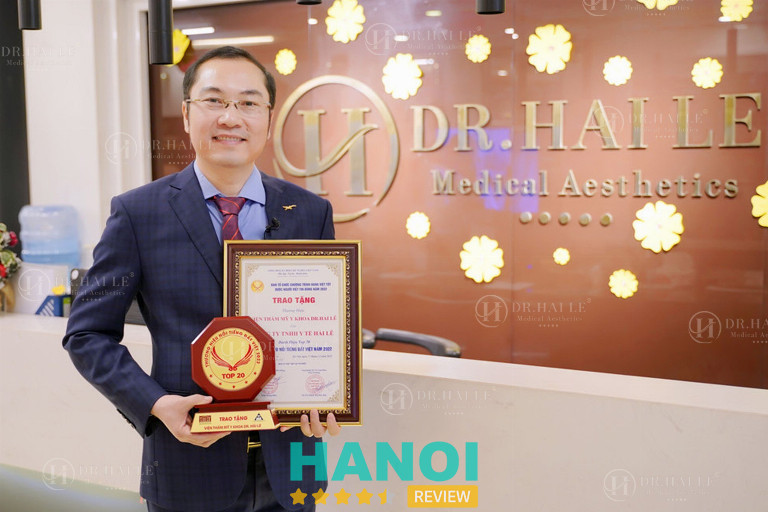
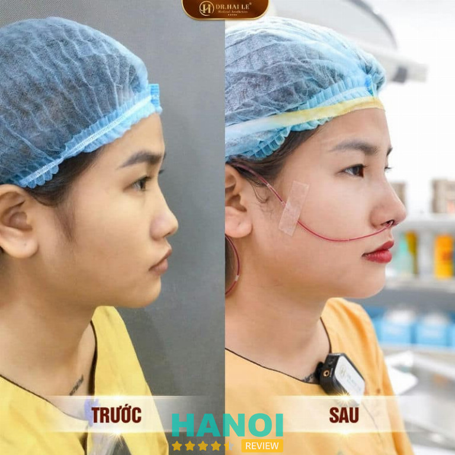
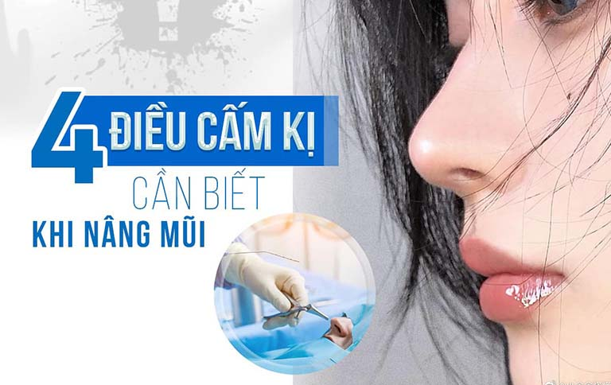
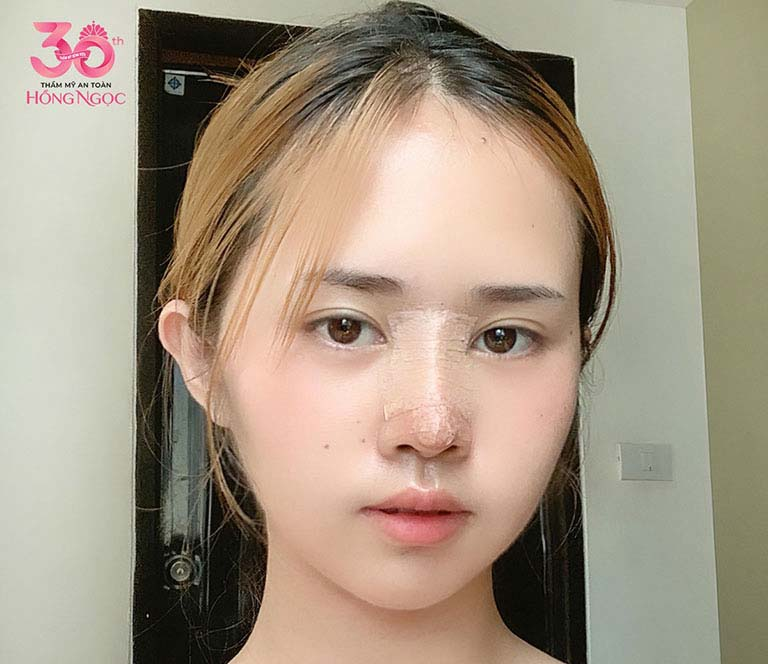
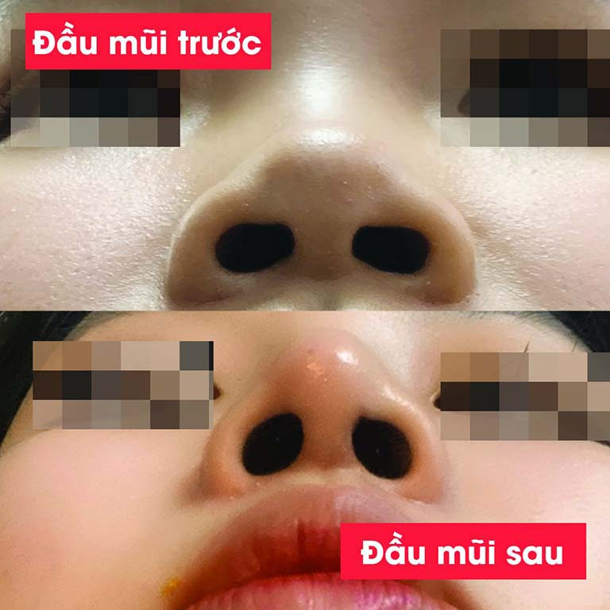

11 Địa chỉ nâng mũi tại Hà Nội uy tín, an toàn, bác sĩ giỏi
Nâng mũi hiện nay là giải pháp làm đẹp vô cùng phổ biến, được áp dụng cho cả nam và nữ giới. Tuy nhiên khi thực hiện, bạn nên tìm đến đúng địa chỉ nâng mũi đẹp ở Hà Nội, tập hợp bác sĩ giỏi để được tư vấn và lập phác đồ cụ thể từng tình trạng.
Bởi lẽ, cấu trúc mũi của nữ và nam giới khác nhau rõ rệt, vì thế cần chọn lựa những cơ sở thẩm mỹ uy tín, nổi tiếng trên địa bàn thủ đô để được bác sĩ đưa ra lời khuyên hữu ích.
Top 11 Địa chỉ nâng mũi ở Hà Nội đẹp, chi phí phải chăng nhất
Một chiếc mũi cao có thể nói là bộ phận “ăn tiền” hàng đầu trên gương mặt. Đa phần thì hầu hết những người sở hữu chiếc mũi thấp, tẹt, gồ hoặc mũi hếch, … hay bất kỳ khuyết điểm nào trên bộ phận này cũng sẽ nghĩ đến việc nâng mũi là giải pháp làm đẹp hàng đầu.
Nâng mũi được thực hiện ở những địa chỉ uy tín, bác sĩ “mát tay” sẽ giúp bạn có được dáng mũi cao thanh tú, chuẩn Tây hằng mong ước mà không lo biến chứng. Từ đó tạo tâm thế tự tin, bạn hoàn toàn có thể thuận lợi hơn trong công việc cũng như cuộc sống với ngoại hình mới xinh xắn.
Nếu đang đắn đo khi chọn lựa giữa những địa chỉ nâng mũi ở Hà Nội, bạn đọc có thể tham khảo và liên hệ 1 trong 10 cơ sở thẩm mỹ uy tín được HaNoiReview gợi ý dưới đây.
Viện thẩm mỹ Y khoa Dr. Hải Lê
Trong hành trình tìm kiếm vẻ đẹp hoàn hảo, Viện thẩm mỹ Y khoa Dr. Hải Lê đã trở thành lựa chọn tin cậy của hàng nghìn khách hàng. Với kinh nghiệm gần 20 năm hoạt động, nơi đây đã trở thành đơn vị hàng đầu tại Hà Nội, chuyên cung cấp những dịch vụ thẩm mỹ an toàn và hiện đại nhất hiện nay.
Đội ngũ bác sĩ tại Dr. Hải Lê không chỉ sở hữu kiến thức chuyên sâu mà còn có đôi tay tài hoa, thực hiện các kỹ thuật chuẩn xác và luôn biết cách tôn vinh nét đẹp tự nhiên của mỗi khách hàng. Song song đó, viện thẩm mỹ không ngừng cập nhật những công nghệ làm đẹp tiên tiến nhất hiện nay để giúp khách hàng trải nghiệm những dịch vụ chất lượng cao và an toàn tuyệt đối.

Nâng mũi là một trong những dịch vụ thế mạnh của Dr. Hải Lê. Với các kỹ thuật nâng mũi hiện đại như Medi – Surform, Demi Tech 6D, Medi – Form, Demi-5D Dr. Hải Lê, S-line, L-line,…. các bác sĩ tại đây đã giúp hàng ngàn khách hàng sở hữu dáng mũi đẹp tự nhiên, hài hòa với khuôn mặt. Ngoài ra, nơi đây còn cung cấp thêm dịch vụ phẫu thuật sửa mũi gồ, thu gọn đầu mũi, cánh mũi,…
Tại Viện thẩm mỹ Y khoa Dr. Hải Lê, khách hàng không chỉ được trải nghiệm những dịch vụ thẩm mỹ chất lượng mà còn được tận hưởng không gian sang trọng và dịch vụ chăm sóc chuyên nghiệp. Mỗi khách hàng đều được tư vấn kỹ lưỡng, giúp lựa chọn phương pháp phù hợp nhất. Quy trình thực hiện được đảm bảo an toàn, vô trùng, mang đến sự yên tâm tuyệt đối.
Với phương châm “Khách hàng là trung tâm”, Dr. Hải Lê luôn đặt sự hài lòng của bạn lên hàng đầu. Viện cam kết:
- An toàn: Môi trường vô trùng, trang thiết bị hiện đại, đội ngũ bác sĩ giàu kinh nghiệm.
- Hiệu quả: Liên tục cập nhật các kỹ thuật nâng mũi tiên tiến, mang đến kết quả thẩm mỹ vượt trội.
- Tự nhiên: Dáng mũi hài hòa, cân đối và không lộ dấu vết phẫu thuật.
- Minh bạch: Chi phí dịch vụ rõ ràng, hợp lý, cam kết không phát sinh thêm.
- Chăm sóc tận tâm: Đội ngũ tư vấn viên và y tá luôn sẵn sàng hỗ trợ khách hàng 24/7.

Viện thẩm mỹ Y khoa Dr. Hải Lê là lựa chọn hoàn hảo cho những ai đang tìm kiếm một địa chỉ nâng mũi uy tín và chất lượng tại khu vực Hà Nội. Với sự kết hợp hoàn hảo giữa tay nghề, công nghệ và dịch vụ, đơn vị này tự tin mang đến cho bạn vẻ đẹp hoàn hảo và sự tự tin tỏa sáng.
Thông tin liên hệ:
Viện Thẩm Mỹ Y Khoa Dr.Hải Lê
- Cơ sở 1: 314, Phố Huế, Hai Bà Trưng, Hà Nội
Giấy phép hoạt động tại HN: 3156/SYT-GPHĐ
- Cơ sở 2: 552-554 Trần Hưng Đạo, Phường 2, Quận 5, TP.HCM
Giấy phép hoạt động tại TP.HCM: 05605/SYT-GPHĐ
- Điện thoại: 1900.55.55.55 – 0392.636.888
- Add Zalo VTM: 039.2636.999
- Website: drhaile.vn
- Fanpage:FB.com/VienThamMyDr.HaiLe
Khoa Phẫu thuật và điều trị theo yêu cầu – Bệnh Viện 108 Hà Nội
Khoa Phẫu Thuật và điều trị theo yêu cầu trực thuộc Bệnh Viện TWQĐ 108 được biết đến là cơ sở làm đẹp, thẩm mỹ uy tín. Đơn vị luôn nhận được sự tin tưởng, yêu mến nồng nhiệt của hàng nghìn người dân nơi đây.
Khoa tự hào là nơi công tác của các các phó giáo sư, bác sĩ đầu ngành. Vì thế mà đây cũng là một trong những lý do chính, tạo nên uy tín và sự tin tưởng cho đơn vị. Điều khác biệt nữa tại đây chính là bạn hoàn toàn có thể yên tâm trùng tu nhan sắc của mình tại một bệnh viện lớn, có cơ sở vật chất khang trang và thiết bị y tế hiện đại nhất.
Tại Khoa Phẫu thuật và điều trị theo yêu cầu, nơi đây đã thực hiện hàng nghìn ca thẩm mỹ vùng mặt như cắt mí mắt, nâng mũi, phẫu thuật căng da mặt, chỉnh khớp cắn, gọt hàm, hạ gò má, … Ngoài ra còn có các dịch vụ thẩm mỹ toàn thân, đại phẫu khác. Dịch vụ tại đây là sự kết hợp giữa nhiều bác sĩ chuyên khoa giàu kinh nghiệm, luôn tư vấn kỹ càng cho bệnh nhân.
Đến nâng mũi tại đây, khách hàng có thể hoàn toàn yên tâm về chất lượng và cách phục vụ. Bạn hoàn toàn có thể lựa chọn phẫu thuật viên và đội ngũ y tế tốt nhất, hỗ trợ chăm sóc cho mình. Với kinh nghiệm qua hàng loạt ca nâng mũi thành công, an toàn – Khoa cam kết giúp bạn có thể sở hữu được dáng mũi thanh tú, phù hợp với từng đường nét trên gương mặt, hạn chế biến chứng tối đa.
Dịch vụ nâng mũi tại Khoa được tiến hành bởi các bác sĩ đầu ngành. Chắc chắn, các bác sĩ tại đây luôn là những người nắm bắt những xu hướng hiện đại, áp dụng phương pháp tiên tiến vào điều trị. Qua đó đảm bảo chất lượng và kết quả hoàn mỹ nhất cho khách hàng.
Thông tin liên hệ:
- Địa chỉ: 1B Trần Hưng Đạo, P. Bạch Đằng, Q. Hai Bà Trưng, Hà Nội
- Điện thoại: 1900 986 869
- Email: bvtuqd108@benhvien108.vn
- Website: benhvien108.vn
- Facebook: FB.com/537213673082341
Khoa Phẫu Thuật Thẩm Mỹ – Bệnh viện Đa khoa Hà Thành
Khoa Phẫu Thuật Thẩm Mỹ – Bệnh viện Đa khoa Hà Thành cũng là địa chỉ đáng tin cậy ở Hà Nội để bạn thực hiện dịch vụ làm đẹp mũi. Quy trình phẫu thuật nâng mũi tại đây được thực hiện theo tiêu chuẩn nghiêm ngặt và tuân thủ các quy định về vệ sinh và an toàn.
Khách hàng sẽ được đánh giá chuyên sâu về cấu trúc khuôn mặt và mong muốn cá nhân của mình để thiết kế một kế hoạch phẫu thuật phù hợp, nhằm tạo ra kết quả tự nhiên và hài hòa với tổng thể đường nét gương mặt.
Ngoài ra, Khoa Phẫu Thuật Thẩm Mỹ cũng chú trọng đến quá trình hậu phẫu thuật. Đội ngũ điều dưỡng và nhân viên chăm sóc sẽ đảm bảo rằng khách hàng nhận được sự điều trị và chăm sóc toàn diện sau quá trình phẫu thuật. Qua đó đem đến cho bệnh nhân sự phục hồi an toàn và nhanh chóng.

Khách hàng đã sử dụng dịch vụ phẫu thuật nâng mũi tại Khoa Phẫu Thuật Thẩm Mỹ – Bệnh viện Đa khoa Hà Thành rất hài lòng với kết quả. Đông đảo chị em và cả cánh mày râu đều đánh giá cao sự chuyên nghiệp, tận tâm và tư vấn tận tình của đội ngũ y bác sĩ tại đây. Dịch vụ phẫu thuật nâng mũi tại Bệnh viện Đa khoa Hà Thành vì thế mà luôn được khách hàng tin tưởng và lựa chọn.
Tuy nhiên, nhằm đảm bảo an toàn và đạt được kết quả tốt nhất, khách hàng nên tham khảo ý kiến và tư vấn trực tiếp của bác sĩ chuyên khoa trước khi quyết định thực hiện phẫu thuật. Bạn có thể liên hệ qua hotline phía dưới để được hỗ trợ.
Thông tin liên hệ:
- Địa chỉ: 61 Vũ Thạnh, P. Ô Chợ Dừa, Q. Đống Đa, Hà Nội
- Điện thoại: 0912 626 969
- Email: info@benhvienhathanh.vn
- Website: benhvienhathanh.vn
- Facebook: FB.com/TMBVHATHANH
GỢI Ý: 10 Địa chỉ cắt mí mắt tại Hà Nội uy tín, dịch vụ tốt, giá rẻ
Thẩm mỹ Tuấn Anh
Ngoài các bệnh viện công lập, bạn đọc cũng có thể tin tưởng tìm đến nâng mũi tại các thẩm mỹ viện khác ở Hà Nội. Nổi bật trong số đó là cơ sở thẩm mỹ của bác sĩ Trần Tuấn Anh.
Là một vị bác sĩ tài ba và có tâm, với hàng chục năm kinh nghiệm phong phú trong ngành, bác sĩ Tuấn Anh từng có thời gian công tác ở nhiều bệnh viện thẩm mỹ lớn tại Thủ Đô.
Không chỉ có khả năng thực hiện phẫu thuật nâng mũi, bác sĩ còn thực hiện thành công nhiều ca phẫu thuật nâng ngực, treo ngực sa trễ, cắt mí mắt, sửa mũi hỏng, hút mỡ đùi, làm đẹp tầng sinh môn, … được nhiều khách hàng tin tưởng.
Có thể nói, vì thế mà nếu đang tìm nơi nâng mũi uy tín ở Hà Nội, thẩm mỹ Tuấn Anh là cái tên bạn nên lưu lại. Không chỉ thực hiện cho nữ giới, tại đây còn có nhiều trường hợp nâng mũi cho nam.
Với tay nghề và trình độ chuyên môn cao của bác sĩ, khách hàng sẽ được thăm khám và tư vấn, xác định tình trạng mũi và đo vẽ tỷ lệ sụn chính xác. Nhờ vậy, giúp khách hàng sở hữu được dáng mũi đẹp và cao tự nhiên, không cần nghỉ dưỡng quá lâu.
Toàn bộ quy trình nâng mũi được thực hiện trong khoang mũi nên không để lại sẹo. Trực tiếp bác sĩ Tuấn Anh sẽ là người thực hiện thao tác, nên khách hàng có thể yên tâm. Quá trình được tiến hành nhẹ nhàng, đơn giản, không xâm lấn sâu, không bóc tách. Vết mổ được khâu lại bằng chỉ khâu thẩm mỹ tự tiêu, vì thế mà chuyện hình thành sẹo sau phẫu thuật là không bao giờ xảy ra.
Nâng mũi bọc sụn tự thân tại Thẩm mỹ Tuấn Anh đảm bảo có độ dốc tự nhiên và hài hòa gương mặt. Đầu mũi không đỏ, kết quả ổn định lâu dài, không biến chứng. Hơn hết, sau phẫu thuật, bạn luôn được chăm sóc bởi đội ngũ nhân viên tận tình. Để được bác sĩ tư vấn, bạn có thể liên hệ qua hotline hoặc đến trực tiếp cơ sở, luôn có nhân viên hỗ trợ từng bước.
Thông tin liên hệ:
- Địa chỉ: 628A/10 Hoàng Hoa Thám, P. Bưởi, Q. Tây Hồ, Hà Nội
- Điện thoại: 0967 566 369
- Email: tuananhpttm@gmail.com
- Website: bacsituananh.vn
- Fanpage: FB.com/bacsi.trantuanan
Thẩm mỹ viện Mika Vũ Thái
Không ít trường hợp tìm đến bác sĩ Vũ Thái để nâng mũi đành phải ngậm ngùi ra về vì bác sĩ “từ chối” phẫu thuật. Không chỉ nâng mũi mà bất kỳ dịch vụ nào tại đây trước khi thực hiện cũng đều được bác sĩ cho thực hiện xét nghiệm kỹ lưỡng, đảm bảo sức khỏe của bạn đủ điều kiện để tiến hành phẫu thuật.
4 dịch vụ nâng mũi nổi bật nhất tại đây bao gồm:
- Nâng mũi Hàn Quốc
- Nâng mũi cấu trúc
- Nâng mũi bọc sụn
- Nâng mũi S – Line
Nâng mũi tại Thẩm mỹ viện Mika Vũ Thái hoàn toàn giúp chị em tự tin với vẻ ngoài mới. Đầu mũi không bóng đỏ, không lạnh buốt khi tiết trời lạnh và đặc biệt là không lộ mỏng. Đây là cơ sở thẩm mỹ uy tín ở Hà Nội, được nhiều khách hàng tin tưởng đến làm đẹp. Đông đảo kiều bào đang sinh sống tại Pháp, Úc, Hà Lan, … cũng tin tưởng và lựa chọn bác sĩ Vũ Thái để làm đẹp, nâng mũi và cả chỉnh sửa mũi hỏng.
Bên cạnh dịch vụ nâng mũi, Thẩm mỹ viện Mika Vũ Thái còn mang đến cho bạn nhiều giải pháp khác nhau, tạo nên tổng thể chiếc mũi đẹp hoàn hảo:
- Thu gọn cánh mũi
- Thu nhỏ lỗ mũi
- Thu nhỏ đầu mũi
- Kéo dài đầu mũi
- Treo cánh mũi xệ
- Sửa mũi dài, gồ, khoằm
- Chữa mũi đỏ
- Làm to lỗ mũi
Đơn vị áp dụng thực hiện toàn bộ dịch vụ luôn tuân thủ theo một quy trình nghiêm ngặt. Đảm bảo các dụng cụ trước và sau khi sử dụng đã được vệ sinh, sát khuẩn và bảo quản cẩn thận. Điều này giúp bảo vệ an toàn sức khỏe cho khách hàng. Hơn hết là không gây ra bất kỳ biến chứng nào sau ca tiểu phẫu.
Ngoài chất lượng thì nâng mũi tại TMV Mika Vũ Thái còn được khách hàng nhận xét là có chi phí hợp lý. Không chạy theo mục đích thương mại, các dịch vụ tại đây đều đặt sự an toàn và sức khỏe của khách hàng làm ưu tiên. Tư vấn trung thực, chính xác với tình trạng từng người. Đồng thời, mức phí phải chăng và không phát sinh thêm sau điều trị.
Thông tin liên hệ:
- Địa chỉ: 2B Thái Phiên, P. Phố Nhuế, Q. Hai Bà Trưng, TP. Hà Nội
- Điện thoại: 0914 455 555
- Email: tmvmikavuthai@gmail.com
- Website: thammyvienmikavuthai.com
- Fanpage: FB.com/ThammyMikaVuThai
Thẩm mỹ viện Nagami
Thêm một địa chỉ nâng mũi an toàn, uy tín ở Hà Nội mà bạn nên lưu lại chính là thẩm mỹ viện Nagami. Đơn vị được đông đảo khách hàng đánh giá cao về chất lượng dịch vụ. Bên cạnh đó cơ sở vật chất khang trang và cao cấp tại đây cũng chính là yếu tố khiến các “tín đồ” làm đẹp yêu thích.
Thẩm mỹ Nagami Hà Nội luôn đặt ra cho mình nguyên tắc 3 không:
- Không sử dụng thiết bị, máy móc lỗi thời. Các dòng máy tại đây đều nhập khẩu trực tiếp từ nước ngoài Pháp, Thụy Điển, Mỹ, Hàn Quốc
- Không ngại đầu tư những thiết bị đời mới nhất, được bảo dưỡng, định kỳ kiểm tra thường xuyên
- Không ngừng nâng cao trình độ chuyên môn đội ngũ tinh hoa nhân sự, đảo bảo sử dụng hiệu quả hệ thống máy móc thiết bị.
Sở dĩ, thẩm mỹ viện Nagami đặt ra 3 tiêu chí trên chính là bởi máy móc luôn góp phần quan trọng trong việc mang đến kết quả thẩm mỹ hoàn hảo cho khách hàng.
Bên cạnh đó đơn vị cũng tự hào quy tụ các bác sĩ trình độ cao, 100% có giấy phép hành nghề hợp pháp và được đào tạo tu nghiệp ở nước ngoài. Từng có quá trình công tác ở các bệnh viện lớn ở thủ đô, chính vì thế mà khách hàng đến đây nâng mũi, thẩm mỹ mắt hay vóc dáng cũng đều hài lòng với kết quả nhận được.
5 lý do chính khiến khách hàng tin tưởng chọn thẩm mỹ mũi tại Nagami:
- Cơ sở đã được Bộ Y tế cấp phép hoạt động thực hiện, do đó các dịch vụ tại đây đảm bảo tính an toàn cao
- Đội ngũ bác sĩ chuyên môn cao, với 12 năm kinh nghiệm trong việc phẫu thuật thẩm mỹ, hiện đang làm việc ở các bệnh viện lớn như Viện 108, Bệnh viện Đại học Y
- Cơ sở vật chất sang trọng
- Khách hàng đến đây làm đẹp sẽ được trải nghiệm chế độ hậu phẫu tận tâm, bảo hành chu đáo
- Quy trình thẩm mỹ vô khuẩn, tránh các trường hợp nhiễm trùng chéo
Thông tin liên hệ:
- Địa chỉ: 22 Tây Sơn, P. Quang Trung, Q. Đống Đa, Hà Nội
- Điện thoại: 0902 181 111
- Email: info@apamedic.vn
- Website: thammyviennagami.vn
- Fanpage: FB.com/NagamiTMV
Thẩm mỹ Bệnh viện Hồng Ngọc
Thẩm mỹ Bệnh viện Hồng Ngọc trực thuộc hệ thống Bệnh viện Đa khoa Hồng Ngọc, với lịch sử hơn 20 năm hình thành và không ngừng phát triển. Từ khi có mặt trên thị trường đến nay, đơn vị luôn dẫn đầu vị trí trong lĩnh vực làm đẹp, nhận được không ít sự tin tưởng của khách hàng.
Nếu đang phân vân giữa những địa chỉ phẫu thuật nâng mũi tại Hà Nội được chia sẻ ở trên, bạn đọc có thể tham khảo cơ sở này.
Không giống những dịch vụ đại phẫu khác, nâng mũi tuy chỉ là tiểu phẫu thẩm mỹ, nhưng các bác sĩ tại đây và toàn đội ngũ nhân sự Hồng Ngọc luôn đề cao tinh thần làm việc trách nhiệm, tận tâm. Qua đó chứng tỏ đơn vị không chỉ mang đến kết quả thẩm mỹ hoàn hảo mà còn phải đảm bảo an toàn và sức khỏe khách hàng.

Nổi bật tại đây kỹ thuật nâng mũi Wishline, giúp tạo hình dáng mũi đẹp, cao thẳng “chuẩn Tây”. được các bác sĩ nghiên cứu kỹ lưỡng, Wishline là công nghệ tái tạo mũi từ sụn sinh học và sụn tự thân. Phương pháp này hoàn toàn phù hợp với mọi cơ địa và hạn chế biến chứng tối đa, mang lại gương mặt hài hòa, cân đối ở mọi góc nhìn.
Nâng mũi Wishline tại Thẩm mỹ Bệnh viện Hồng Ngọc có các dịch vụ như sau:
- Nâng mũi Wishline
- Nâng mũi Wishline cấu trúc
- Nâng mũi Wishline bán cấu trúc
Quy trình thực hiện nâng mũi tại đây luôn đảm bảo an toàn, diễn ra trong điều kiện vô trùng khép kín. Trước tiên, các bác sĩ sẽ tư vấn và mô phỏng trước kết quả cho bạn xem qua máy Vectra 3D hiện đại. Dựa vào đây bác sĩ có thể gợi ý hoặc chỉ định dáng mũi thích hợp cho từng người.
Mọi khách hàng trước khi nâng mũi đều được tiến hành kiểm tra sức khỏe, thực hiện các xét nghiệm cần thiết, đảm bảo an toàn trong phẫu thuật. Dáng mũi mới của bạn sẽ được đo vẽ theo đúng tỷ lệ, đảm bảo hài hòa với tổng thể khuôn mặt.
Thẩm mỹ Bệnh viện Hồng Hà còn có quy trình chăm sóc hậu phẫu chu đáo, uy tín và có bảo hành. Chính vì thế, bạn hoàn toàn có thể yên tâm khi đến đây làm đẹp.
Thông tin liên hệ:
- Địa chỉ: 08 Châu Văn Liêm , P. Phú Đô, Q. Nam Từ Liêm, Hà Nội
- Điện thoại: 0915 810 138
- Email: info@hongngochospital.vn
- Website: thammyhongngoc.vn
- Fanpage: FB.com/thammybenhvienhongngocptm
THAM KHẢO: 10 Địa chỉ nâng ngực tại Hà Nội đẹp, uy tín, an toàn nhất
Thẩm mỹ viện Dr. Hoàng Tuấn
Thẩm mỹ viện Dr. Hoàng Tuấn Hà Nội nổi tiếng với dịch vụ nâng mũi chất lượng cao cùng quy trình tiếp đón chu đáo. Vì thế mà đông đảo khách hàng ở Hà Nội và các khu vực lân cận đều yêu thích và tin tưởng đến đây trùng tu nhan sắc.
Dr. Hoàng Tuấn mang đến cho chị em phụ nữ và quý ông hàng loạt dịch vụ đa dạng, uy tín và hiệu quả, từ phẫu thuật thẩm mỹ đến thẩm mỹ nội khoa và nha khoa thẩm mỹ. Tất cả đều do đội ngũ bác sĩ trình độ cao và có chuyên môn hóa riêng đảm nhận.
Khách hàng đến đây sẽ được trải nghiệm với không gian làm đẹp cao cấp. Đội ngũ tư vấn viên thân thiện, nhiệt tình, tiếp đón chu đáo ở sảnh chờ. Dr. Hoàng Tuấn với mong muốn đem đến cho khách hàng sự hài lòng và thoải mái tuyệt đối mỗi khi ghé qua, chính vì thế đơn vị mạnh dạn đầu tư hệ thống cơ sở vật chất và trang thiết bị hiện đại, cao cấp nhất trên thị trường.
Nhắc đến nâng mũi, tại đây, quy tụ đội ngũ các bác sĩ phẫu thuật thẩm mỹ giàu kinh nghiệm, có đủ khả năng để tư vấn và thực hiện cho bạn phương pháp làm đẹp mũi từ cơ bản đến phức tạp nhất. Đồng thời đơn vị cam kết sử dụng chất liệu sụn cao cấp, sản xuất trực tiếp tại Hoa Kỳ, có độ tương thích cơ thể lên đến 95%.
Dr. Hoàng Tuấn tự tin sở hữu kỹ thuật nâng mũi cao nhất và chất liệu nâng mũi tốt nhất. Vì thế mà khách hàng chọn lựa nâng mũi tại đây, có thể yên tâm về kết quả như sau:
- Mũi không bị lệch lạc hoặc cong vẹo khi sinh hoạt, tác động
- Hoàn toàn không lộ sụn ra bên ngoài
- Đầu mũi/ sống mũi không bóng đỏ
- Cam kết mang lại cho bạn dáng mũi đẹp tự nhiên, khắc phục triệt để hình dáng chiếc mũi ban đầu
- Độ bền dáng mũi kéo dài mãi theo thời gian
Thông tin liên hệ:
- Địa chỉ: 122 San Hô 6, Vinhomes Ocean Park, H. Gia Lâm, Hà Nội
- Điện thoại: 0931 818 656
- Email: Thammyhoangtuan@gmail.com
- Website: drhoangtuan.vn
- Fanpage: FB.com/DrHoangTuan2023
Thẩm mỹ Như Hoa
Thẩm mỹ Như Hoa cũng là địa chỉ nâng mũi uy tín tiếp theo ở Hà Nội mà bạn có thể tham khảo. Đơn vị được quản lý chuyên môn bởi tiến sĩ, bác sĩ Tống Thanh Hải, bác sĩ tài ba trong ngành phẫu thuật thẩm mỹ. Với gần 20 năm kinh nghiệm trong nghề, bác sĩ đã giúp cho trên 30.000 khách hàng chạm đến giấc mơ “thăng hạng nhan sắc”.
Thẩm mỹ Như Hoa là một trong những đơn vị thẩm mỹ viện hàng đầu Hà Nội. Với cơ sở vật chất được xây dựng khang trang, máy móc thiết bị trang bị là những loại tối tân trên thị trường, kết hợp cùng tay nghề bác sĩ giàu chuyên môn. Vì thế mà khách hàng đến đây làm đẹp, thẩm mỹ mặt hay vóc dáng cũng đều hoàn toàn cảm thấy an tâm.

Thẩm mỹ Như Hoa hiện đang thực hiện hàng loạt các dịch vụ thẩm mỹ mũi xu hướng, với mức giá như sau:
- Nâng mũi Hàn Quốc
- Nâng mũi sụn Mỹ: 35.000.000Đ
- Nâng mũi VIP: 25.000.000Đ
- Nâng mũi S – Line: liên hệ trực tiếp
- Nâng mũi L – Line: liên hệ trực tiếp
- Nâng mũi Golden Line: 35.000.000Đ
- Nâng mũi cấu trúc Basic: 45.000.000Đ
- Nâng mũi cấu trúc Golden Line: 60.000.000Đ
- Nâng mũi sụn sườn: 150.000.000Đ
- Nâng mũi PureForm: 75.000.000Đ
Trước khi phẫu thuật, khách hàng luôn được tiến hành kiểm tra tình trạng sức khỏe, đánh giá khả năng phản ứng thuốc, tính tương thích với chất liệu, … Nếu đủ điều kiện thực hiện, các bác sĩ sẽ tư vấn đến bạn phương pháp phẫu thuật nâng mũi thích hợp với nhu cầu cũng như ngân sách.
Tại đây, quy tụ 100% đội ngũ bác sĩ chuyên môn cao, có kinh nghiệm trong thẩm mỹ mũi. Bên cạnh đó còn có ban cố vấn chuyên môn là những chuyên gia đầu ngành. Chính nhờ vậy có thể giám sát, xử lý tình huống phát sinh trong quá trình thực hiện một cách kỹ lưỡng, chính xác.
Thẩm mỹ Như Hoa ứng dụng công nghệ mới nhất, kỹ thuật bóc tách hạn chế xâm lấn ở mức thấp. Sau phẫu thuật, bạn hoàn toàn không cảm thấy sưng đau, bầm tím và đặc biệt là hoàn toàn không lộ dấu vết phẫu thuật.
Thông tin liên hệ:
- Địa chỉ: 24 Trung Hòa, P. Trung Hòa, Q. Cầu Giấy, Hà Nội
- Điện thoại: 0974 062 222
- Email: thammynhuhoa24@gmail.com
- Website: thammynhuhoa.vn
- Fanpage: FB.com/thammynhuhoa.vn
THAM KHẢO: 10 Địa chỉ thu gọn cánh mũi tại Hà Nội uy tín bác sĩ tốt
Thẩm mỹ Bệnh viện Hồng Hà
Nhiều chị em và cả cánh mày râu cảm thấy thiếu tự tin khi sở hữu chiếc mũi tẹt hoặc hếch, cánh mũi to, đầu mũi bè, … Vậy thì nâng mũi chính là giải pháp hữu hiệu nhất bạn nên tìm đến.
Tại thẩm mỹ Bệnh viện Hồng Hà, đơn vị mang đến cho bạn các phương pháp phẫu thuật nâng mũi an toàn, hiệu quả. Chỉ sau 1 lần phẫu thuật duy nhất, bạn đã có thể tự tin, hài lòng với dáng mũi mới thanh toát, quyến rũ, giúp gương mặt tăng phần xinh xắn.
Hiện, Thẩm mỹ Bệnh viện Hồng Hà đang được khách hàng đánh giá tích cực các dịch vụ thẩm mỹ vùng mũi như sau:
- Nâng mũi thẩm mỹ
- Nâng mũi chất liệu nhân tạo
- Nâng mũi kết hợp chất liệu tự thân
- Nâng mũi bằng sụn tự thân
- Nâng mũi cho nam
Ngoài ra, đơn vị cũng tiếp nhận khắc phục và chỉnh sửa nhiều ca mũi hỏng, được thực hiện ở các thẩm mỹ viện kém chất lượng khác. Bởi lẽ, Hồng Hà quy tụ đội ngũ bác sĩ phẫu thuật thẩm mỹ giàu kinh nghiệm, hết lòng vì khách hàng. Trong từng ca bệnh, luôn đặt trách nhiệm lên hàng đầu.
Bác sĩ tại đây có đầy đủ chuyên môn và trình độ tay nghề. Chính vì thế mà có thể tự tin đủ khả năng tư vấn và thực hiện nâng mũi cho cả nam và nữ giới. Sau khi thăm khám và đánh giá, bác sĩ sẽ tư vấn cho bạn phương pháp thích hợp nhất.
Cấu trúc mũi của nam giới so với nữ khác nhau, da trên đầu mũi cũng thô hơn, … đó là lý do tại sao mà trước khi thực hiện, các bác sĩ luôn tư vấn và phân tích kỹ càng. Qua đó có thể lập phác đồ cá nhân hóa, thích hợp từng đối tượng khách hàng.
Tại thẩm mỹ Bệnh viện Hồng Hà, đơn vị luôn tiên phong sử dụng các chất liệu độn an toàn, được chứng nhận bởi FDA. 100% sụn nâng mũi sinh học được nhập khẩu chính hãng từ Hàn Quốc, Mỹ. Qua đó khách hàng có thể hoàn toàn yên tâm khi làm đẹp tại đây.
Sau khi nâng mũi, khách hàng còn được miễn phí toàn bộ chi phí tái khám. Tại Thẩm mỹ Hồng Hà luôn có chế độ chăm sóc đặc biệt, nhiệt tình từ đội ngũ nhân viên, y bác sĩ.
Thông tin liên hệ:
- Địa chỉ: 16 Nguyễn Như Đổ, P. Văn Miếu, Q. Đống Đa, Hà Nội
- Điện thoại: 1900 633 988
- Email: tuvan@benhvienhongha.com
- Website: benhvienhongha.com
- Fanpage: FB.com/thammybenhvienhongha
Thẩm mỹ Dr. Hoàng Hà
Dr. Hoàng Hà là một địa chỉ làm đẹp – thẩm mỹ chất lượng hàng đầu ở Hà Nội. Được thành lập từ năm 2014, đến nay đã gần 1 thập kỷ hoạt động, đơn vị không ngừng có những bước cải tiến, phát triển vượt bậc để mang đến cho khách hàng những dịch vụ làm đẹp đỉnh cao.
Tại đây được xây dựng với cơ sở vật chất khang trang, hiện đại như mô hình bệnh viện thẩm mỹ cao cấp. Điểm đặc biệt tại Dr. Hoàng Hà là sự đa dạng trong các loại hình thẩm mỹ, từ thẩm mỹ vùng mắt, vóc dáng cho đến các dịch vụ thẩm mỹ khác, … Tất cả đều được đơn vị nghiên cứu và ứng dụng những phương pháp làm đẹp mới nhất, cam kết mang đến khách hàng kết quả thành công sau phẫu thuật.
Đặc biệt nếu đang tìm địa chỉ nâng mũi đẹp ở Hà Nội, thì đây nhất định là nơi bạn không nên bỏ qua. Đội ngũ tinh hoa nhân sự tại Dr. Hoàng Hà luôn không ngừng nâng cao trình độ chuyên môn và tay nghề, tự tin đủ khả năng đến đem đến cho khách hàng chất lượng dịch vụ an tâm, hài lòng. Với diện mạo mới, bạn hoàn toàn có thể thăng hạng và thành công hơn trong công việc và cuộc sống.
Hiện, bạn có thể chọn một trong các dịch vụ nâng mũi sau tại Dr. Hoàng Hà:
- Nâng mũi Babie Line
- Nâng mũi S – Line
- Nâng mũi L – Line
- Nâng mũi Nam
Trước khi thực hiện nâng mũi dù theo bất kỳ phương pháp nào, bạn cũng sẽ được trực tiếp bác sĩ chuyên khoa Nguyễn Hoàng Hà thăm khám và kiểm tra kỹ càng tình trạng mũi. Tiếp đến bác sĩ sẽ tư vấn các công nghệ cũng như phương pháp thích hợp nhất dành cho từng khách hàng.
Đặc biệt, nhờ ứng dụng máy móc hiện đại mà khách hàng khi nâng mũi tại đây sẽ được xem trước bản mô phỏng dáng mũi trước và sau khi nâng. Qua đó bạn và bác sĩ sẽ cùng nhau thảo luận, trao đổi để quyết định phương pháp phẫu thuật phù hợp.
Thông tin liên hệ:
- Địa chỉ: 25 Hà Kế Tấn, P. Phương Liệt, Q. Thanh Xuân, Hà Nội
- Điện thoại: 0969 333 225
- Website: drhoangha.vn
- Fanpage: FB.com/drhoanghapttm
6 Lưu ý cần nhớ khi lựa chọn địa chỉ nâng mũi ở Hà Nội an toàn, uy tín
Mũi được xem là bộ phận trung tâm trên gương mặt. Ngoài yếu tố tâm linh mang đến tài lộc, thịnh vượng thì nhiều người còn xem xét dựa trên mặt thẩm mỹ. Do đó khi sở hữu chiếc mũi khuyết điểm, không cân đối với đường nét khuôn mặt thì nâng mũi được coi là giải pháp thẩm mỹ hàng đầu.
Mũi đóng vai trò quan trọng cả về sinh lý, thẩm mỹ lẫn nhân tướng học. Vì thế mà sở hữu một chiếc mũi đẹp, hoàn hảo là mong ước của không ít người. Nếu đang có ý định trùng tu nhan sắc vùng mũi của mình, bạn nên tìm đến những địa chỉ nâng mũi uy tín ở Hà Nội, nơi có bác sĩ giàu tay nghề và chuyên môn kinh nghiệm để được thăm khám kỹ lưỡng.
Tuy nhiên, giữa vô số đơn vị làm đẹp được giới thiệu, trước khi đưa ra bất kỳ quyết định lựa chọn nào, bạn nên tham khảo kỹ những lưu ý bên dưới. Đây sẽ là cơ sở để giúp bạn đánh giá, nhận xét được uy tín của đơn vị phẫu thuật nâng mũi mà bạn có ý định “gửi gắm niềm tin:
- Được Bộ Y tế cấp phép hoạt động rõ ràng: Nếu không lựa chọn làm nâng mũi tại các cơ sở làm đẹp trực thuộc nhà nước, bạn có thể tìm đến các đơn vị thẩm mỹ tư nhân. Tuy nhiên khi lựa chọn, bạn nên tìm hiểu kỹ càng về giấy phép hoạt động và thực hiện dịch vụ của cơ sở đó. Đảm bảo thẩm mỹ viện hoặc trung tâm thẩm mỹ có đầy đủ giấy phép thực hiện nâng mũi do cơ quan có thẩm quyền cấp phép hợp pháp.
- Quy tụ đội ngũ bác sĩ tay nghề cao: Tất nhiên, sự góp mặt của các bác sĩ phẫu thuật thẩm mỹ giàu kinh nghiệm luôn là yếu tố quan trọng hàng đầu, khiến khách hàng quyết định có nên chọn làm đẹp tại cơ sở hay không. Do đó bạn nên chọn những địa chỉ nâng mũi có bác sĩ giỏi, được đào tạo bài bản và tích cực học hỏi, nghiên cứu phương pháp nâng mũi mới. Điều này vừa đảm bảo tăng tính thành công, an toàn cho ca phẫu thuật, vừa đảm bảo bạn có cơ hội tiếp cận với những kỹ thuật nâng mũi mới, hợp xu hướng hiện hành.
- Sử dụng chất liệu sụn chất lượng: Chất liệu độn mũi là yếu tố cũng rất quan trọng, góp phần làm nên thành công của ca phẫu thuật. Đối với những cơ sở uy tín, họ cam kết sử dụng chất sụn sinh học được nhập khẩu từ nước ngoài, có khả năng tương thích cao với cơ thể. Qua đó đảm bảo được tính thẩm mỹ và thời gian lâu bền chất liệu.
- Quy trình rõ ràng, chuyên nghiệp: Để khách hàng yên tâm hơn trong khi phẫu thuật, cơ sở làm đẹp uy tín nên thông báo quy trình rõ ràng. Đặc biệt, nâng mũi cần tiến hành xét nghiệm và thử một số phản ứng thuốc, … để biết chính xác cơ thể của bạn có đủ điều kiện thực hiện hay không. Vì thế cơ sở cần thông báo cặn kẽ đến khách hàng về các bước tiến hành.
- Giá cả phải chăng: Tùy vào dịch vụ nâng mũi bạn lựa chọn, chi phí sẽ dao động và có sự chênh lệch. Dịch vụ cơ bản có giá từ 15.000.000Đ – 30.000.000Đ, đối với các dịch vụ phức tạp hợp sẽ có giá từ 35.000.000Đ – hơn 100.000.000Đ. Bạn cũng nên hỏi rõ về toàn bộ chi phí, đảm bảo cơ sở có cung cấp mức giá cố định cho bạn hay chưa và có phát sinh thêm khoản thu nào sau điều trị hay không.
- Có chế độ chăm sóc hậu phẫu chu đáo: Để quá trình nâng mũi đạt được kết quả hoàn hảo nhất, cần có sự chăm sóc kỹ lưỡng sau quá trình hậu phẫu. Vì thế, bạn nên chọn những nơi có chế độ chăm sóc sau phẫu thuật được nhiều khách hàng trước đó đánh giá cao. Có đội ngũ nhân viên y tế, bác sĩ giám sát tận tình.
Kết: Nâng mũi tuy là tiểu phẫu không quá phức tạp tuy nhiên vẫn cần được thực hiện tại những cơ sở uy tín, bác sĩ giỏi. Hy vọng với những thông tin chia sẻ liên quan về các địa chỉ nâng mũi ở Hà Nội đẹp, an toàn, chuyên nghiệp vừa rồi – bạn đọc đã có được cho mình sự lựa chọn đáng tin cậy, đồng hành trong chặng đường nâng tầm nhan sắc sắp tới.
Có thể bạn quan tâm
- 5 Địa chỉ nâng mông tại Hà Nội uy tín, cho vòng 3 chuẩn đẹp
- 10 Địa chỉ hút mỡ bụng ở Hà Nội an toàn, phương pháp hiện đại
- 10 Bác sĩ phẫu thuật thẩm mỹ tại Hà Nội giỏi, mát tay nhất
- 10 Thẩm mỹ viện tại Hà Nội uy tín, dịch vụ tốt, bác sĩ mát tay
DOANH NGHIỆP: Đăng tải thông tin MIỄN PHÍ.
Tin đọc nhiều


10 Thẩm mỹ viện căng chỉ trẻ hóa da mặt tại Hà Nội đẹp, uy...
Căng chỉ trẻ hóa da mặt, còn được gọi là "căng chỉ không phẫu thuật" là một phương pháp thẩm mỹ được sử dụng để...

10 Địa chỉ hút mỡ bụng ở Hà Nội an toàn, phương pháp hiện đại
Trong thế giới làm đẹp hiện đại, chị em phụ nữ có thể cải thiện bất kỳ bộ phận nào trên cơ thể theo mong...

10 Địa chỉ làm hồng nhũ hoa tại Hà Nội uy tín, đẹp tự nhiên
Bạn đang tìm kiếm một địa chỉ làm hồng nhũ hoa tại Hà Nội để cải thiện tình trạng thâm sạm, xỉn màu nhưng chưa...
10 Địa chỉ nâng ngực tại Hà Nội đẹp, uy tín, an toàn nhất
Các địa chỉ nâng ngực tại Hà Nội đang là những địa chỉ được chị em quan tâm. Bởi nâng ngực là một trong những...

Trở thành người đầu tiên bình luận cho bài viết này!